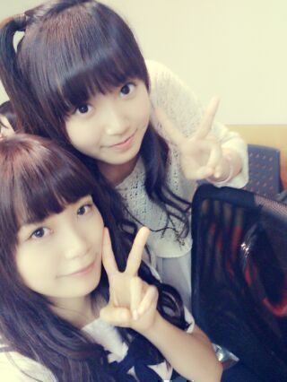
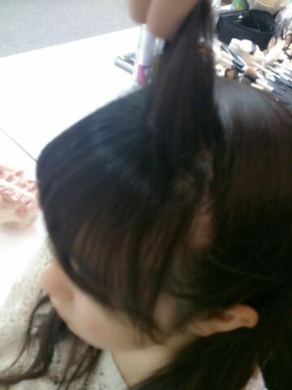

| 2013/06 22 Sat | ひめたん(*>ω<*)そ の308 |

まいまい(〃ω〃)
まいまい。まいまいまいぺーすまいまい
好きよー♪んふふ
右になんかスペースが。
んでも気にしない。まいぺーす
ひめぺーす！
ごめんなさい何でもないですーるーん♪
告知ばーん
 文化放送「スパカン！」
文化放送「スパカン！」
日時：2013年6月28日
番組放送時間：21：30〜24：00
番組HP: http://www.joqr.co.jp/supacan/
生田絵梨花、川後陽菜、中元日芽香
お楽しみに(^O^)☆
えーなんだろな
昨日久々にメイクしてレッスン行ったら
いくちゃんが褒めてくれましたー
あっそうそう！
あのね、みなさん
風船は膨らませることできますかー？
...えっとね ばかにしてるわけじゃないの。
お腹を使って歌をうたう人は
風船が膨らませられるらしいんだけど
ひめたんは全くだめだった(´・ω・｀)
なにゆえ...
乃木坂のメンバーとして、
元放送部部長として
もうこれは全力で恥じましたー
じゃああたしは今まで
どっから声出してたんだろう...
.........。
...ごほっ
この前の
146コメさんがみくもてぃだったの(*^ω^*)
さっすが姉さんもってんなー
手書きメッセージ書くから待っててね☆

 ひめたんのことも好きなんだけど
ひめたんのことも好きなんだけど
万理華のことも大好きなんです!!
俺はどーしたら良いでしょうか。
そんなあなたの前には
３つのコマンドが点滅してる。はず
▽万理華推しになる
▽日芽香推しになる
▽なかいさん推しになる
うまーれーかーわるのはーきーみだ〜♪
さゆりんごとひめたんの
2ショット写真見たいです><
そーいや撮ったよ最近！
近々貼るねー( ω )
ひめたんちゃんさんは
柏幸奈ちゃんさんと仲良しだったんですね!?
詰め込んだね(笑)えっとー質問なんだっけか
あーそうそう仲良しですよー♪
ゆっきーなーーあああ
君の名は希望の個人PV
誰のがお気に入りですか？
万理華の！
ひめたんは女子アナになりました。
誰にどんなインタビューしたいですか？
ジャッキーちゃんの特番を作るべく
いろんなこと聞いてみたいですね(ω)
11人お兄さんいらっしゃいますが
誰が一番好きですかーとかね。
大きなバケツプリンは好きですかーとか
そしてー
また質問募集しますー( ^ω^ )
明日の24時あたりで締め切ります！
どしどし聞いてね



前回の写めのおまけ
これくらいとってみた。
(＊´・ω・＊)
コメント(250)
2013/06/22 22:54